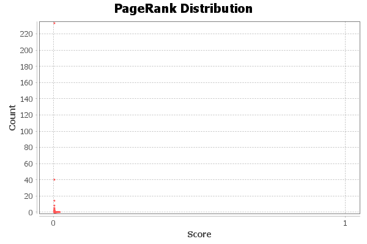

PageRank Report
Parameters:
Epsilon = 0.001
Probability = 0.85
Results:

Algorithm:
Page, Lawrence and Brin, Sergey and Motwani, Rajeev and Winograd, Terry (1999) The PageRank Citation Ranking: Bringing Order to the Web. Technical Report. Stanford InfoLab.